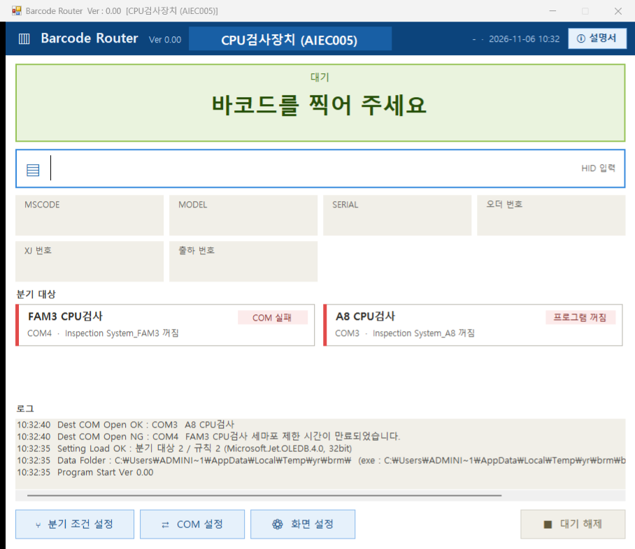
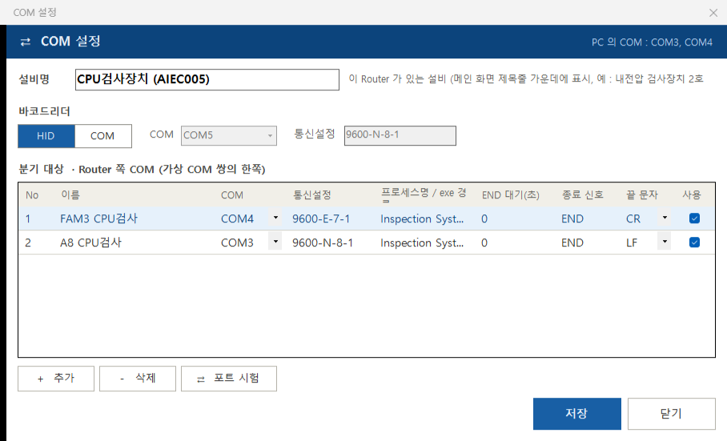
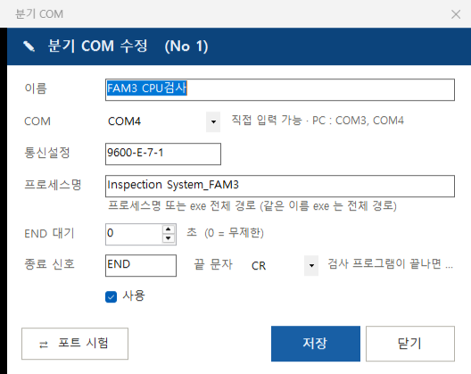
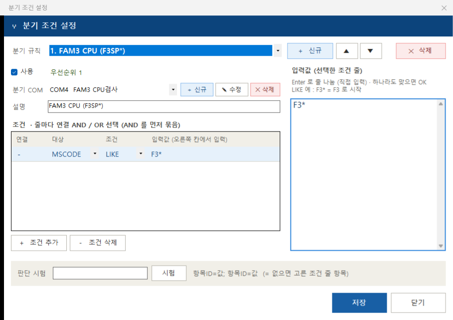
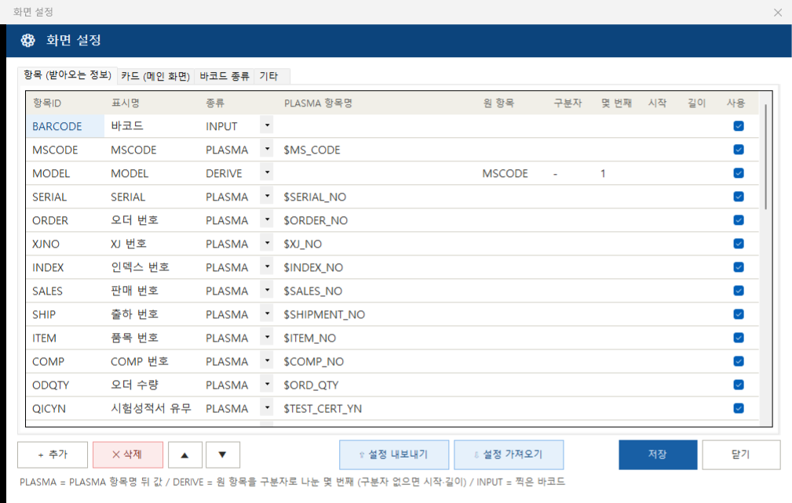
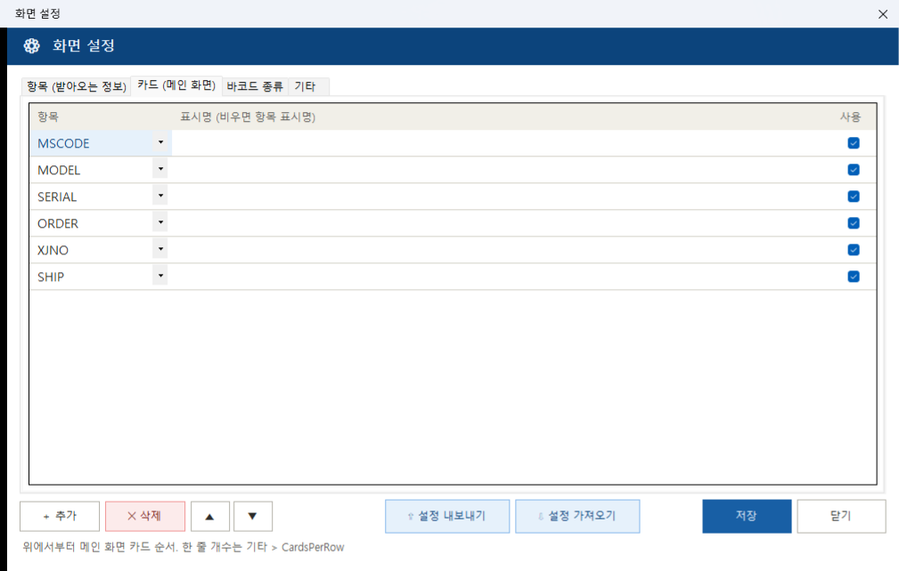
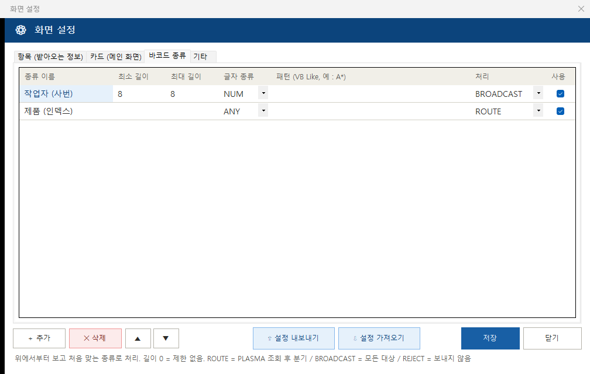
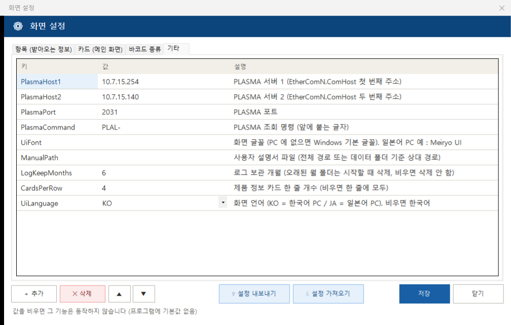

Barcode Router 구조도
IM_Barcode_Router 부속 자료 · 프로그램1 / 프로그램2 = Router 가 분기하는 검사 프로그램 (설비마다 다름)
Ver.1 블록 구성도
Router 내부 블록과 외부 연결을 함께 보는 그림
연결 구성
| 블록 | 클래스 | 하는 일 |
|---|---|---|
| COM 송수신 | clsRouterPort | 리더 COM 수신, 분기 대상 COM 으로 바코드 + 끝 문자 전송, END 수신 |
| 분기 판단 | clsRouteJudge | 바코드 종류 판단, PLASMA 값으로 규칙을 우선순위 순서로 확인 |
| 실행 확인 · 창 앞으로 | clsWindowControl | 프로세스명(또는 exe 전체 경로)으로 검사 프로그램 확인, 창 전환 |
| 설정 | clsRouterSetting | Files\RouterSetting.mdb 읽기 / 쓰기 (COM, 규칙, 화면) |
바코드 1개 처리 순서
Ver.2 시퀀스
누가 언제 무엇을 주고받는지 시간 순서로 보는 그림 (위 → 아래)
| 구간 | 설명 |
|---|---|
| 바코드 → END | 이 사이 Router 는 "검사 중" 으로 바코드 입력을 잠금 |
| END | 검사 프로그램이 OK · NG 어느 쪽이든 검사 끝에 1회 송신 |
| 바코드 B | 규칙 판단 결과가 다르면 프로그램2 로 보냄 (프로그램1 은 영향 없음) |
Ver.3 간단 개요
처음 보는 사람용 한 장 요약
설정 (RouterSetting.mdb) 과 실제 화면
Router 의 설정은 모두 Files\RouterSetting.mdb 한 파일에 있습니다. 메인 화면 아래 버튼 3개로 여는 설정 창에서 바꾸고, 저장하면 이 파일에 기록됩니다. 프로그램에는 기본값이 없어서 이 파일이 없으면 바코드를 보내지 않습니다.
상자를 누르면 해당 화면 설명으로 이동합니다. 아래 화면은 CPU검사장치(AIEC005) 실제 설정입니다 (FAM3 CPU검사 = 프로그램1, A8 CPU검사 = 프로그램2).
메인 화면
설정 파일을 읽어 그대로 보여 주는 곳 · 아래 버튼 3개로 설정 창을 엶

| 화면 위치 | 읽는 테이블 |
|---|---|
| 제목줄 가운데 설비명 | tblEquipment |
| 입력 칸 오른쪽 "HID 입력" | tblReader 입력 방식 |
| MSCODE · MODEL · SERIAL … 카드 | tblCard (순서, 표시명), 한 줄 개수는 tblConfig CardsPerRow |
| 분기 대상 카드 (이름 · COM · 프로세스명 · 상태) | tblDestination |
| 오른쪽 위 ⓘ 설명서 | tblConfig ManualPath |
COM 설정
메인 화면 [COM 설정] · tblEquipmenttblReadertblDestination

| 화면 항목 | 테이블 | 바꾸면 |
|---|---|---|
| 설비명 | tblEquipment | 메인 화면 제목줄 표시가 바뀜 |
| 바코드리더 HID / COM, COM, 통신설정 | tblReader | 바코드를 키보드 입력(HID)으로 받을지, 실물 COM 으로 받을지 |
| 분기 대상 목록 (No, 이름, COM …, 사용) | tblDestination | 한 줄 = 검사 프로그램 1개. 표에서 바로 고치고 [저장] |
분기 COM 수정 (분기 대상 1개)
분기 조건 설정의 분기 COM [신규] / [수정] · tblDestination 1행

| 화면 항목 | 뜻 | 예 (프로그램1) |
|---|---|---|
| 이름 | 분기 대상 카드, 로그에 표시 | FAM3 CPU검사 |
| COM | Router 쪽 가상 COM (짝의 반대쪽을 검사 프로그램이 씀) | COM4 |
| 통신설정 | 속도-패리티-데이터-스톱. 검사 프로그램과 같아야 함 | 9600-E-7-1 |
| 프로세스명 | 실행 확인 · 창 앞으로에 쓰는 exe 이름 (같은 이름이면 전체 경로) | Inspection System_FAM3 |
| END 대기 | END 를 기다리는 최대 초. 0 = 무제한 | 0 |
| 종료 신호 / 끝 문자 | 검사 끝에 받을 글자 / 바코드 뒤에 붙일 문자 | END / CR |
| 사용 | 끄면 이 대상으로 보내지 않음 | ✔ |
분기 조건 설정
메인 화면 [분기 조건 설정] · tblRuletblRuleCond

| 화면 항목 | 테이블 | 뜻 |
|---|---|---|
| 분기 규칙, 사용, 우선순위, 분기 COM, 설명 | tblRule | 규칙 1개 = "이 조건이면 이 대상으로". 우선순위 순서로 보고 처음 맞는 규칙 1개만 적용 |
| 조건 줄 (연결, 대상, 조건, 입력값) | tblRuleCond | 예 : MSCODE LIKE F3* → FAM3 형명이면 프로그램1. 줄끼리 AND / OR |
| 판단 시험 | (저장 안 함) | 값을 넣어 어느 규칙에 걸리는지 미리 확인 |
화면 설정 · 항목 / 카드
메인 화면 [화면 설정] 의 첫 두 탭 · tblFieldtblCard


| 탭 | 테이블 | 뜻 |
|---|---|---|
| 항목 (받아오는 정보) | tblField | PLASMA 에서 받을 값 정의. 종류 PLASMA = 조회값, DERIVE = 다른 항목을 잘라 만듦 (MODEL = MSCODE 의 '-' 앞), INPUT = 찍은 바코드. 규칙의 "대상" 으로 고를 수 있음 |
| 카드 (메인 화면) | tblCard | 메인 화면에 보일 항목과 순서, 표시명 |
화면 설정 · 바코드 종류 / 기타
[화면 설정] 의 뒤 두 탭 · tblBarcodeTypetblConfig


| 탭 | 테이블 | 뜻 |
|---|---|---|
| 바코드 종류 | tblBarcodeType | 찍은 바코드가 무엇인지 길이 · 글자 종류 · 패턴으로 판단. 처리 ROUTE = PLASMA 조회 후 분기 / BROADCAST = 모든 대상 (예 : 작업자 사번) / REJECT = 보내지 않음 |
| 기타 | tblConfig | 키 = 값 목록. PlasmaHost1·2 / PlasmaPort / PlasmaCommand (PLASMA 접속), UiFont, ManualPath (ⓘ 설명서), LogKeepMonths, CardsPerRow, UiLanguage. 비우면 그 기능은 동작하지 않음 |
| 설정 내보내기 / 가져오기 | (파일 전체) | 다른 설비로 복사, 백업. 가져오면 이전 파일은 Files\Backup\ 에 보관 |
Router 연계 설정
검사 프로그램 1개를 Router 에 붙일 때 하는 일. 위에서부터 차례로. COMa = Router 쪽 가상 COM, COMb = 검사 프로그램 쪽 가상 COM (번호는 설비에서 정함)
BarcodeReaderSetting = 통신설정
통신설정 = 3 과 같게
프로세스명 = exe 이름
종료 신호 END / 끝 문자 CR 또는 LF
예 MSCODE LIKE F3*
→ Router END Send OK
형태별 코드 (5)
검사가 끝나고 포트를 다시 연 다음 줄 (OK / NG / 중지 모두 지나가는 곳)
Call clsRouterLink.SendEnd(SerialPort1, 설정폴더, Sub(m) 로그(m))
Load : Read of BarcodeReader → PortSetup / SerialPort1_DataReceived / Closed : PortClose
그 다음 위와 같은 SendEnd 1줄
설정폴더 = RouterLink.mdb 가 있는 폴더 (예 mAppPath & "Files\") · 로그는 생략 가능
같아야 하는 값
Router 없이 원래대로
- RouterLink.mdb → No (또는 파일 삭제)
- BarcodeReaderPort → 원래 리더 COM (원래 HID 프로그램은 빈 칸)
- 다시 빌드할 필요 없음